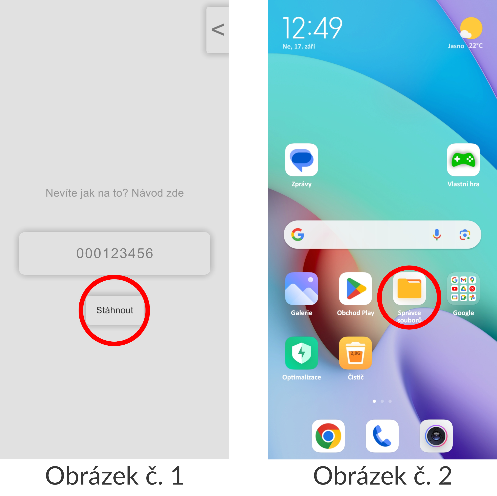
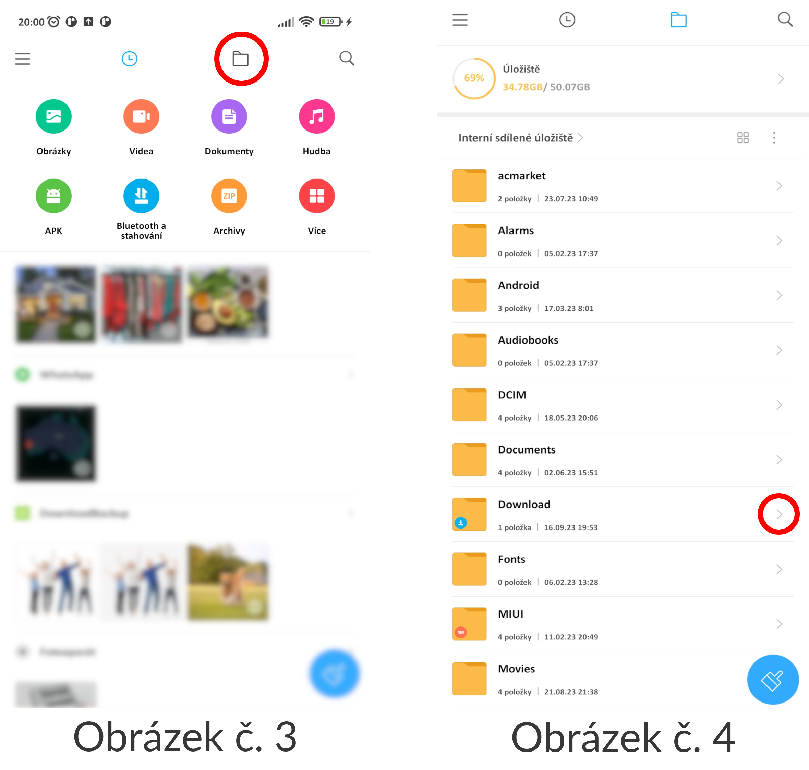
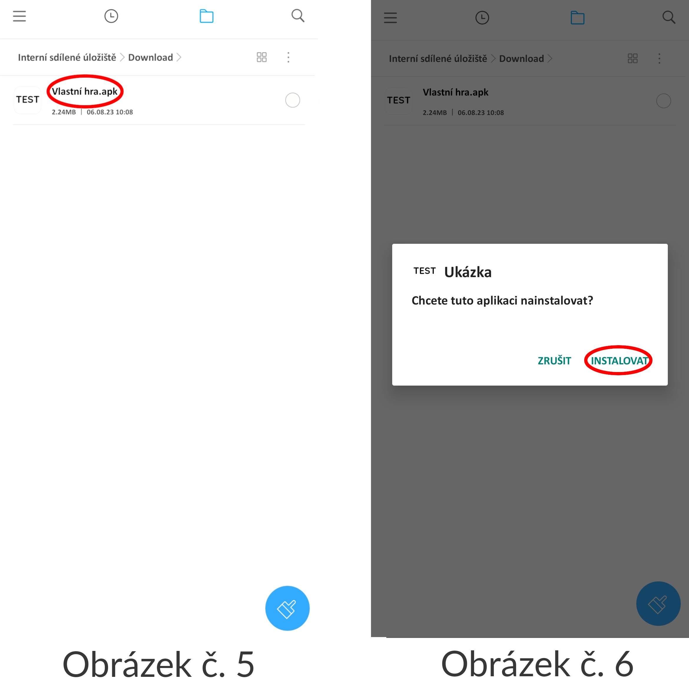
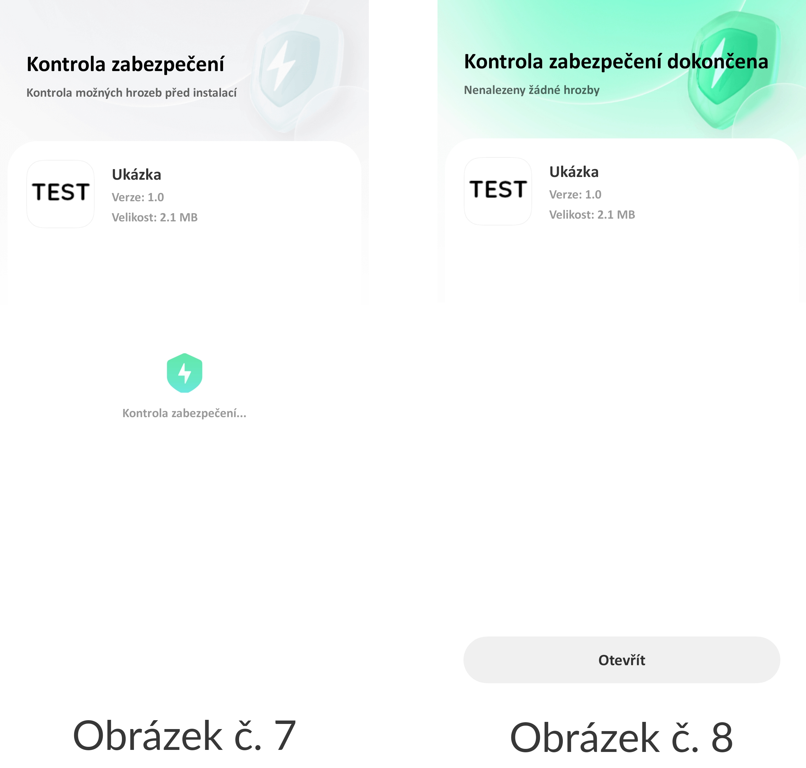

1. Hru si stáhnete tak, že po otevření aplikace zadáte do uživatelského vstupu svůj kód (ten, co vám přišel na e-mail) a kliknete na tlačítko "Stáhnout" (viz obrázek č. 1).
2. Nyní odejděte z aplikace a spusťte správce souborů (viz obrázek č. 2)

3. Klikněte na ikonu souborů (viz obrázek č. 3), a vyberte složku "Download" (viz obrázek č. 4)

4. Vyberte z seznamu aplikace která se jmenuje podle toho, co jste navolily v nastavení hry (viz obrázek č. 5)
5. Ukáže se dialog s textem "Chcete tuto aplikaci nainstalovat?" Zvolte možnost "INSTALOVAT" (viz obrázek č. 6).

6. Po chvilce instalace by se měla otevřít antivirová kontrola (viz obrázek č. 7).
7. Po dokončení kontroly můžete kliknout na tlačítko "Otevřít" a tím spustíte vaši hru.

Aplikace by se měla i po zavření trvale objevit na ploše vašeho telefonu (viz obrázek č. 8).
Kontaktujte nás na email: vlastnihry.zpetnavazba@gmail.com.